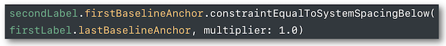

WWDC 2017 : Building Apps with Dynamic Type
This video available on the official Apple website (session 245) aims at defining what Dynamic Type is, based on good practice implementation.


Various contents and their video timelapse are indicated hereunder :
- Text styles (06:06) ⟹ iOS 11 upgrade
- Custom fonts (08:17) ⟹ iOS 11 new feature
- Web views (09:25)
- Wrap to multiple lines (10:14)
- Auto layout system spacing constraints (11:31)
- Scaled values (12:56) ⟹ iOS 11 new feature
- Side-by-side text (13:36)
- PreferredContentSizeCategory (15:23)
- Table view cells (16:38)
- Images (20:13)
- Example (24:32)
Thereafter, the selection of a title will give rise to the video playback on the Apple website directly at the proper moment.
Text styles (06:06) #
All the text styles can have the 5 accessibility sizes in iOS 11 whereas it was only the case for the body text style before.
In the Xcode Interface Builder, just indicate the style in the Attribute Inspector part and tick Dynamic Type to adjust the text size to the device settings.
Get the exact same result with the following code :

Custom fonts (08:17) #
The new iOS 11 class UIFontMetrics allows a custom font to be automatically adjusted.

Web views (09:25) #
When a web view is used, the CSS may contain information about the text style to be displayed :

Wrap to multiple lines (10:14) #
When a label may be troncatured after adjustment, it's recommended to write 0 number of lines in the Attribute Inspector part of the Interface Builder that will be understood as no limit.

Auto layout system spacing constraints (11:31) #
Using a baseline constraint between two labels, the good practice for Dynamic Type is not to put a constant value so as not to end up in the following situation :

The baseline contraint Standard Value in Interface Builder or a programmatic solution using constraintEqualToSystemSpacingBelow (iOS 11 feature) will lead to an overcome situation.

Scaled values (12:56) #
The new scaledValue method provides the height of a graphical element containing text whose size may automacally grow or shrink.

This might be useful for a button whose background content must be updated after a font size modification for instance.
Side-by-side text (13:36) #
Vertically nearby labeled elements may become unreadable or may worsen the graphical interface at a specific text size.
In that case, it's highly recommended to update the alignment from horizontal to vertical once this size threshold is reached.

PreferredContentSizeCategory (15:23) #
2 specific groups gather all the possible text sizes :
- The first one contains the 7 basic thresholds from
extraSmalltoextraExtraExtraLarge. - The second one is accessibility dedicated and must be activated to be taken into account. It includes the last 5 thresholds from
accessibilityMediumtoaccessibilityExtraExtraExtraLarge.
These values can be obtained from the view traitCollection or from the application preferredContentSizeCategory method.
It's also possible to set conditions dealing with text sizing in order to rearrange graphical elements when necessary.

Table view cells (16:38) #
Standard table view cells content is automatically adjusted thanks to the cell-sizing.

Constraints must be adapted in case of custom cells in order to obtain the desired rendering and let the cell-sizing work.

Images (20:13) #
Dynamic Type allows image size adjustment for both views and tab bars as well.
All the detailed explanations for this implementation can be found in the development part.
Example (24:32) #
During this presentation, some solutions for Dynamic Type pitfalls are suggested thanks to a simple application (take a look at it before reading what's next) :
- Why doesn't my implemented
Dynamic Typework ?
(26:19) (hint =adjustsFontForContentSizeCategory(code) orAutomatically Adjusts Font(Attribute Inspector) +scaledFontif custom font is used) - How can I change items position to adapt text enlargement ?
(28:01) (hint = set up constraints for a vertical alignment + define these new constraints activation thanks topreferredContentSizeCategory+traitCollectionDidChangeto be notified of a text size changing) - How to make my table view cells size to fit content ?
(31:03) (hint =UITableViewAutomaticDimension+estimatedRowHeight) - Why is there unscaled image size with the text enlargement ?
(32:11) (hint =adjustsImageSizeForAccessibilityContentSizeCategory) - Why have I unsmooth images when enlargement is set up ?
(33:07) (hint =Preserve Vector Datain the Attribute Inspector of the .xcassets) - How can I check enlargement with accessibility inspector ?
(34:56)